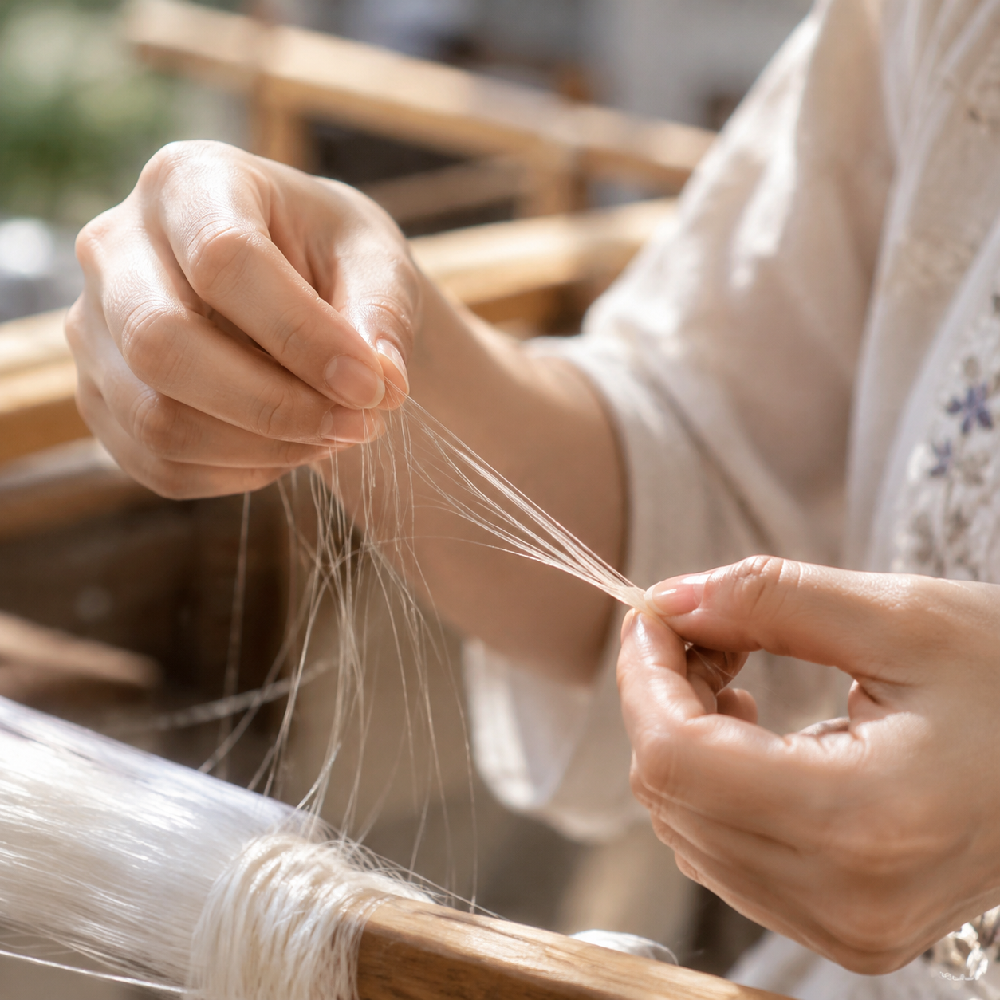
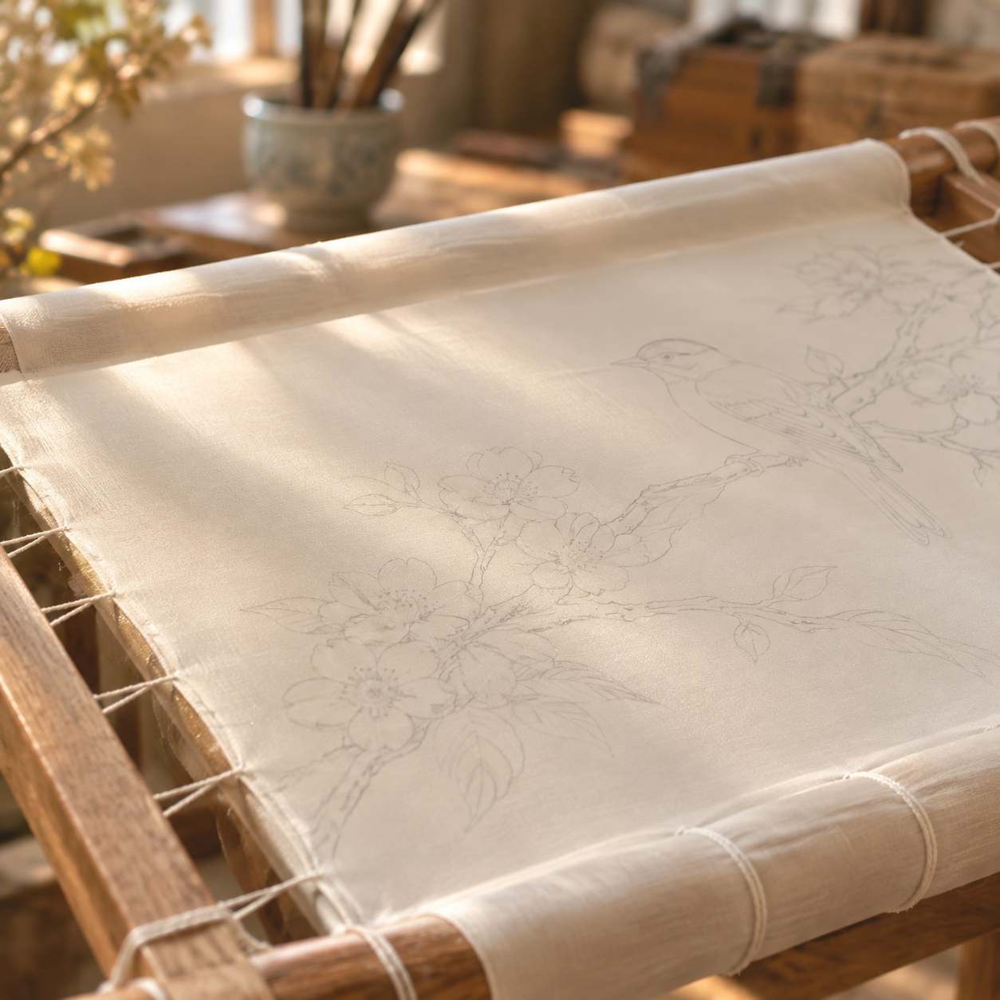
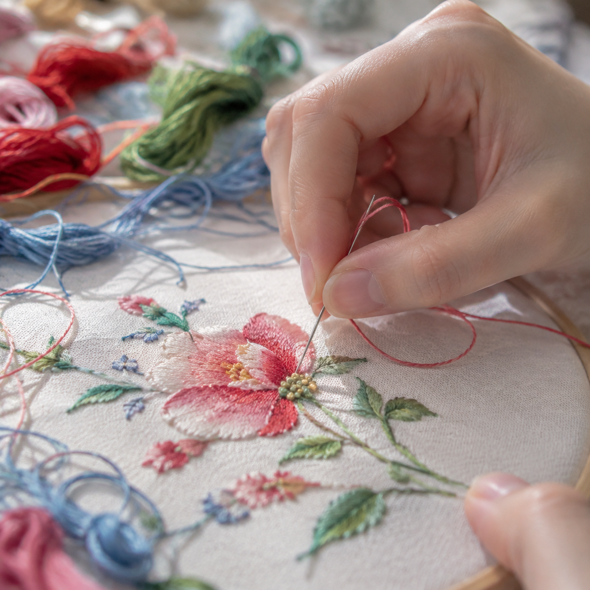
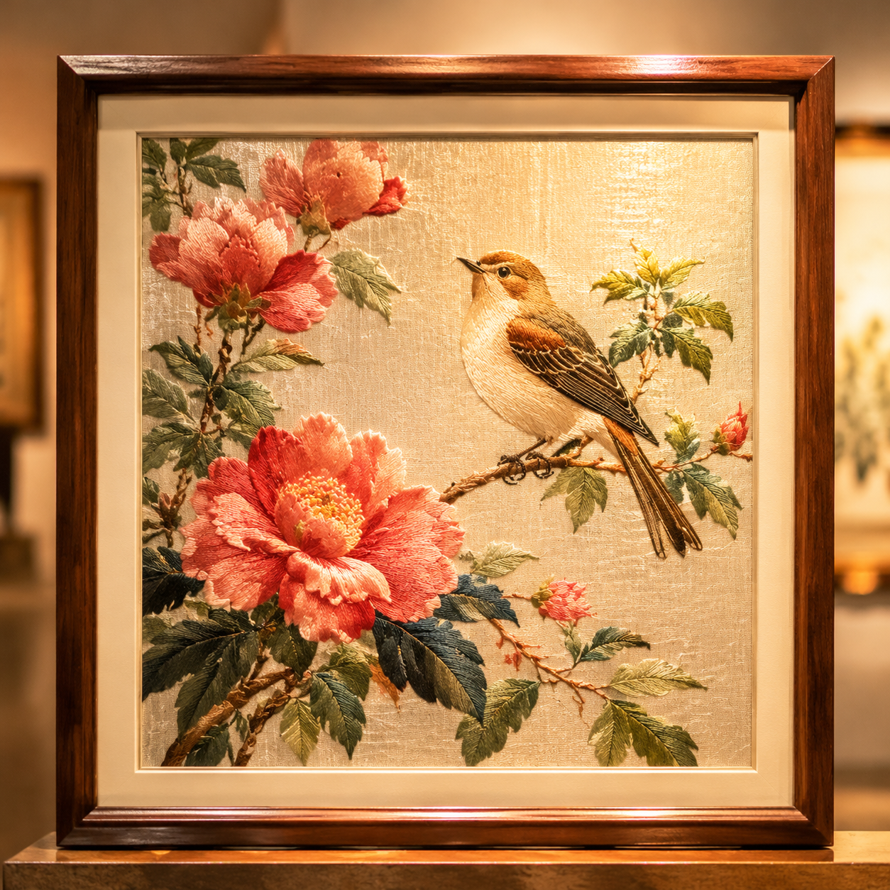
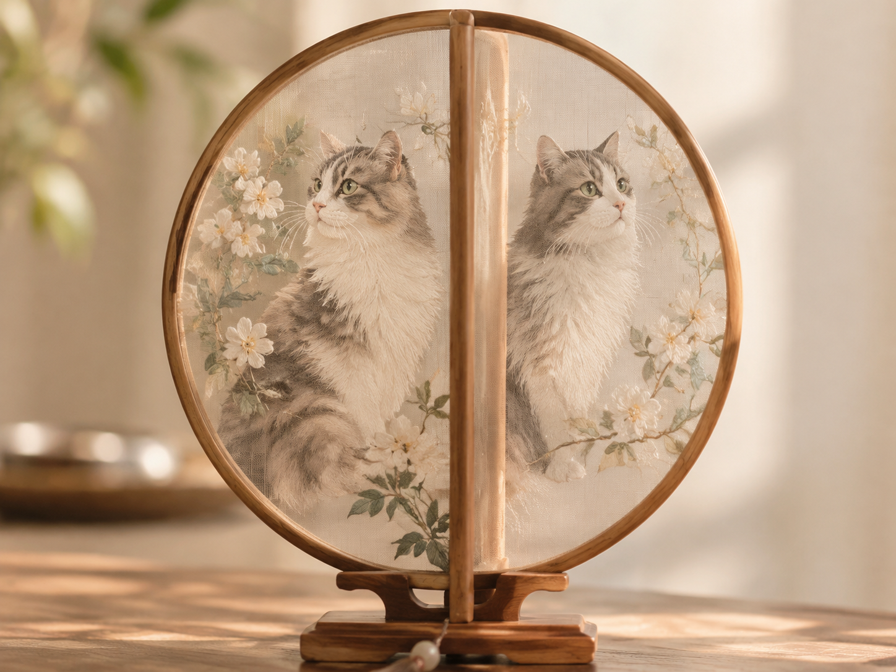
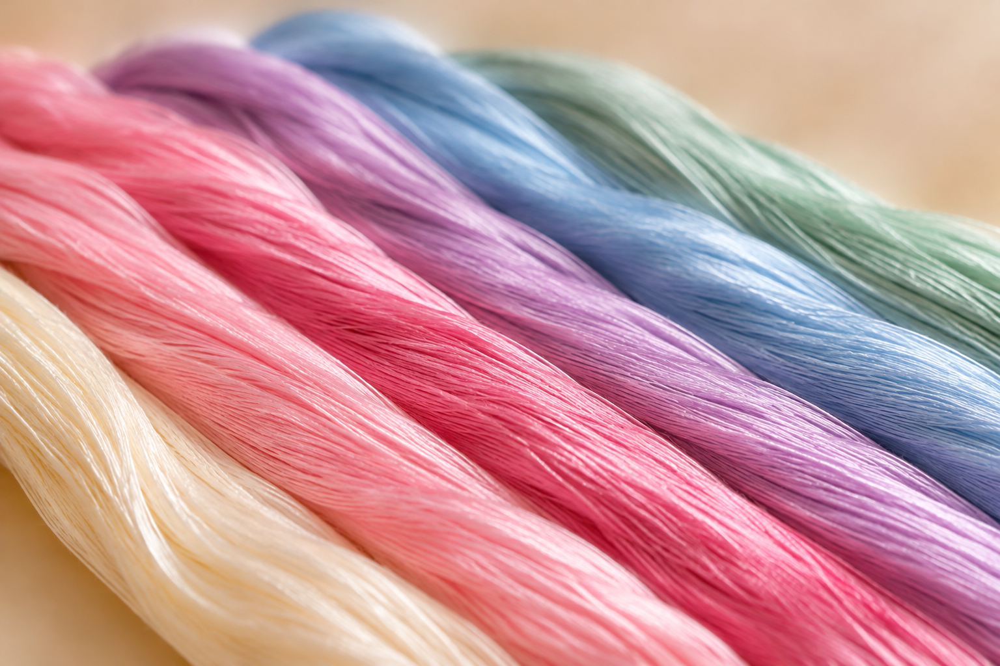

一根丝，分成数十缕
绣娘把蚕丝分得越细，绣面越柔，颜色的过渡也越自然。
把一根丝，劈到极细；把一段光阴，绣进布里。
苏绣是用针引线，在绸缎等织物上绣出图案的传统技艺。它以“平、齐、细、密、匀、顺、和、光”八个字著称：绣面平整、针脚齐整、丝缕纤细、排布紧密，光泽柔和，正反皆可观赏。
绣娘把蚕丝分得越细，绣面越柔，颜色的过渡也越自然。
双面绣的针脚在薄纱中穿行，两面互不影响，考验眼与手的极致控制。
花鸟的羽毛、猫眼的瞳光，都能靠丝线的走向与深浅表现出来。
从一根丝到一幅作品，中间没有捷径。每一步都靠手上的经验和耐心。

把一根蚕丝线分成更细的丝缕，再按颜色和浓淡归类。丝越细，绣出来的层次越柔和。
这一步决定了绣面的细腻程度，也最考验手感。

把底料绷紧在绣架上，布面平整如镜，再把设计好的图案描到布上，作为下针的依据。
布绷得够紧，针脚才走得稳、走得匀。

以针代笔，一针一针把颜色和光影绣出来。针法有平针、乱针等，靠的是长年练出的手感。
同一片花瓣，换一种走针方向，质感就完全不同。

绣完取下、修整边缘，再装裱成屏、成画，成为可以挂起来看很久的作品。
装裱是最后一关，直接决定作品最终的样子。

04 · 技法
在薄如蝉翼的底料上，同一块区域的正反两面各绣一幅完整的画。针脚不能穿透到另一面，起针、收针、换色都要藏得无影无踪。
一件苏绣的价值，不在图案本身，而在那些看不见的时间里。

关于苏绣最常见的疑问，一次说清。
一针一线
如果你也被这一针一线打动，不妨去找一次身边的非遗体验，亲手穿一次针。
回到顶部